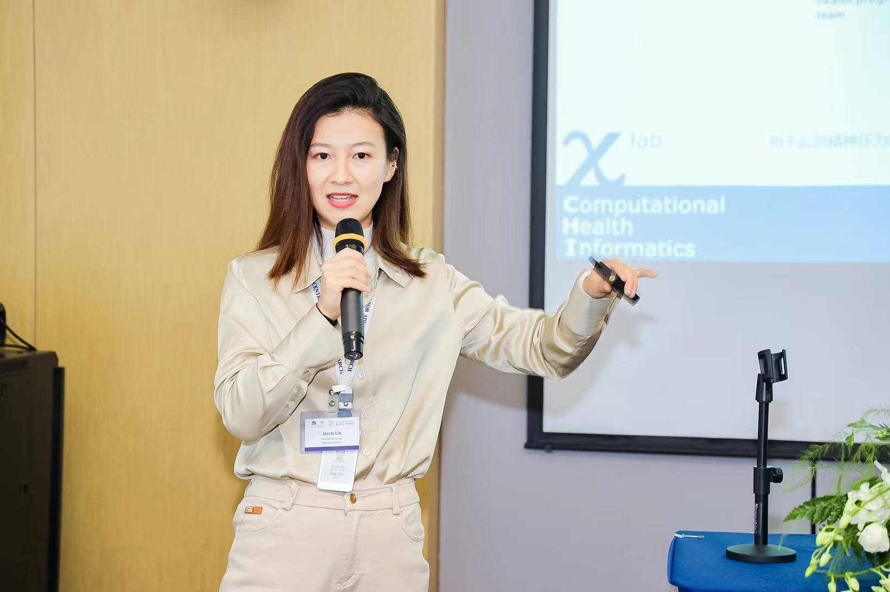
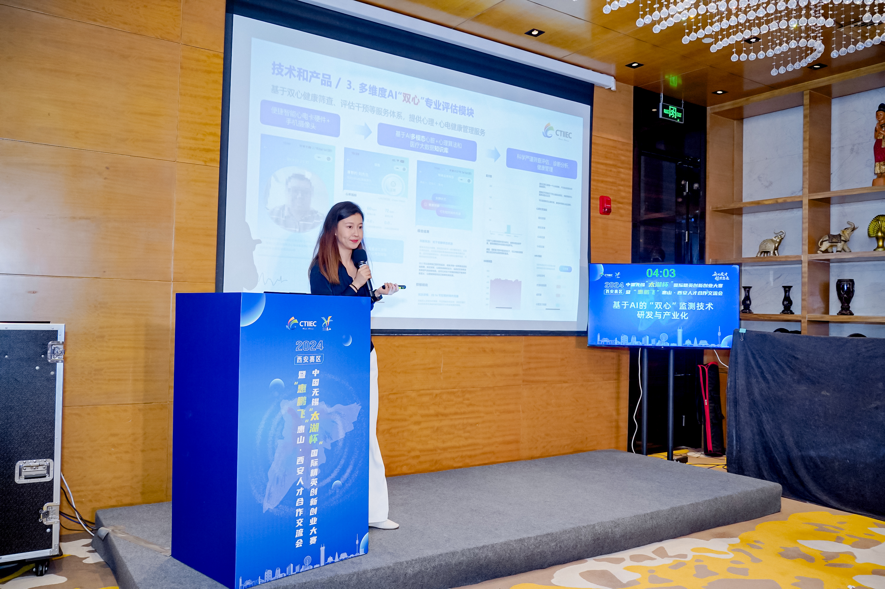
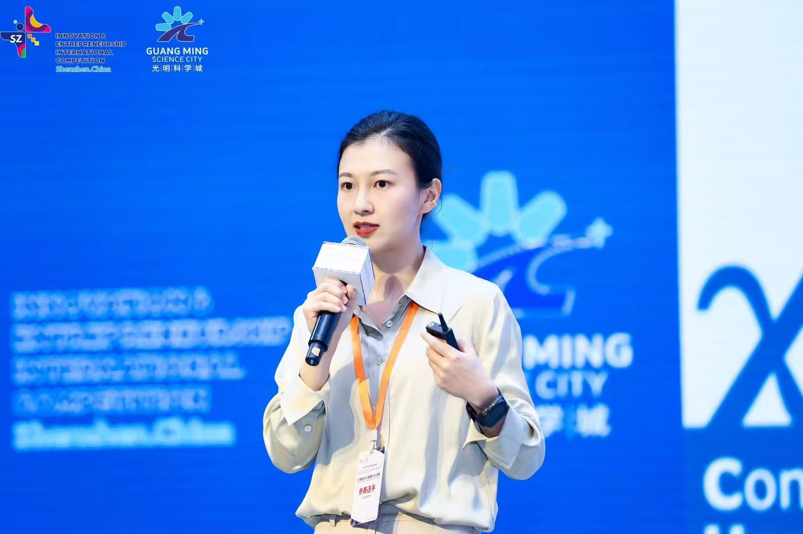
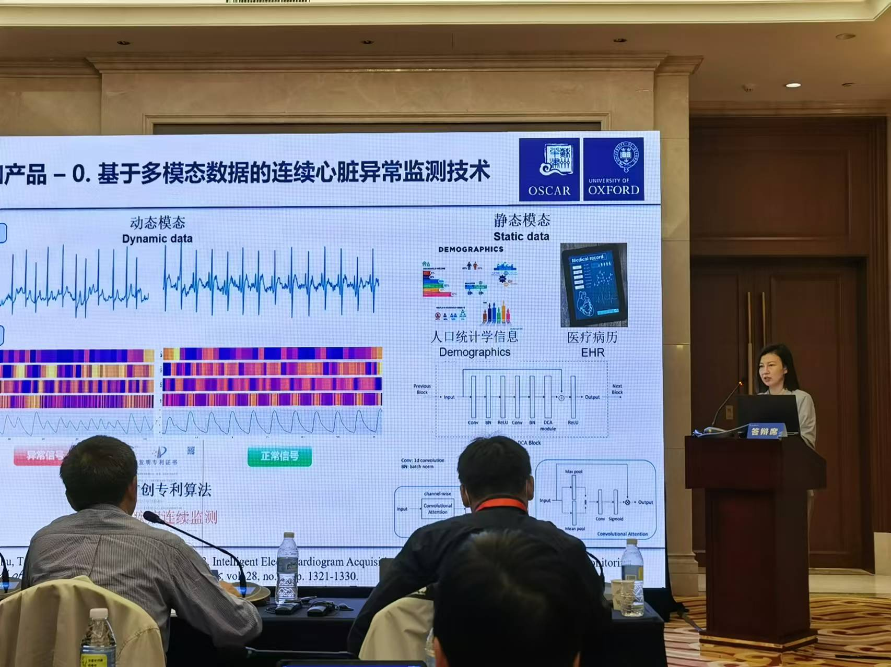
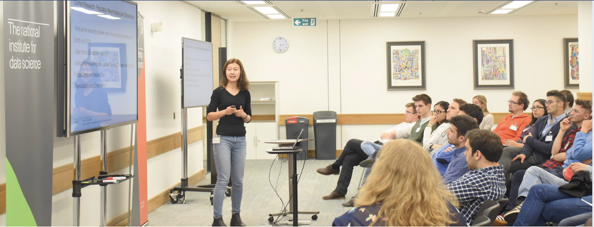

Academic Prizes, Grants, Awards, and Scholarships
- Winning Prize for The First Yangtze River Economic Belt High-Value Patent Commercialization and Utilization Competition
- Winning Prize for The 7th China (Jinan) New Growth Drivers Innovation and Entrepreneurship Contest
- Winning Prize for The 2024 CHINA Taihu International Innovation & Entrepreneurship Competition
- 2023 Suzhou Dushu Lake Science and Education Innovation Zone - High-Quality Innovation Platform (2,000,000 CNY)
- 2023 & 2024 Suzhou Industrial Park (SIP)-Science and Education Key Talent Programme (80,000 CNY)
- 2021 IEEE Healthcare Summit Data Hackathon Joint Winner - Bioinformatics Track: Liu, Z., Jin, J., Wang, C., Yang, Y., Clifton, D.A. Protein Docking Score Prediction with SMILES Fingerprints.
- 2022 SIP High-level Talent Award (50,000 CNY)
- 2021 Jiangsu Provincial Entrepreneurial and Innovative Doctor of Philosophy Programme (150,000 CNY)
- 2017 & 2018 Guarantors of Brain Travel Award for attending the Organization for Human Brain Mapping Annual Meeting
- 2017 The Alan Turing Institute Enrichment Programme Studentship
- 2016 Chinese Scholarship Council - University of Warwick Joint PhD Full Scholarship
- 2015 Studentship in the Department of Statistics, University of Warwick
- 2012 & 2013 First-Class International China Partnership Scholarship at Loughborough University
Roadshow Moments




